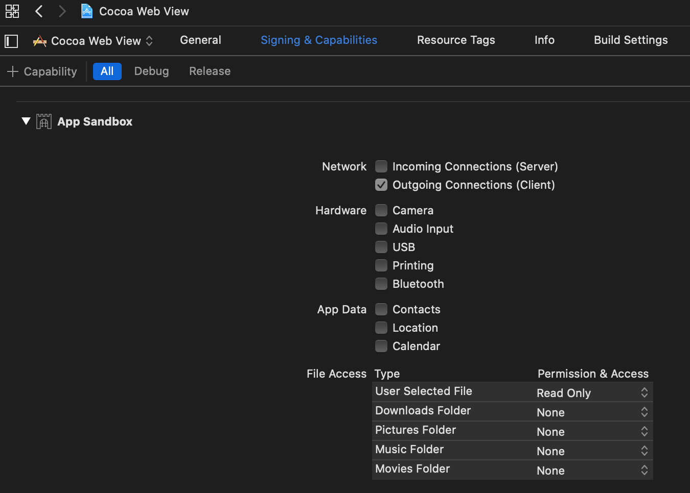
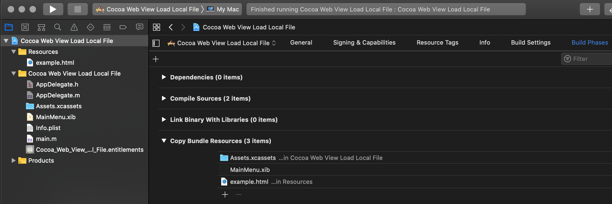
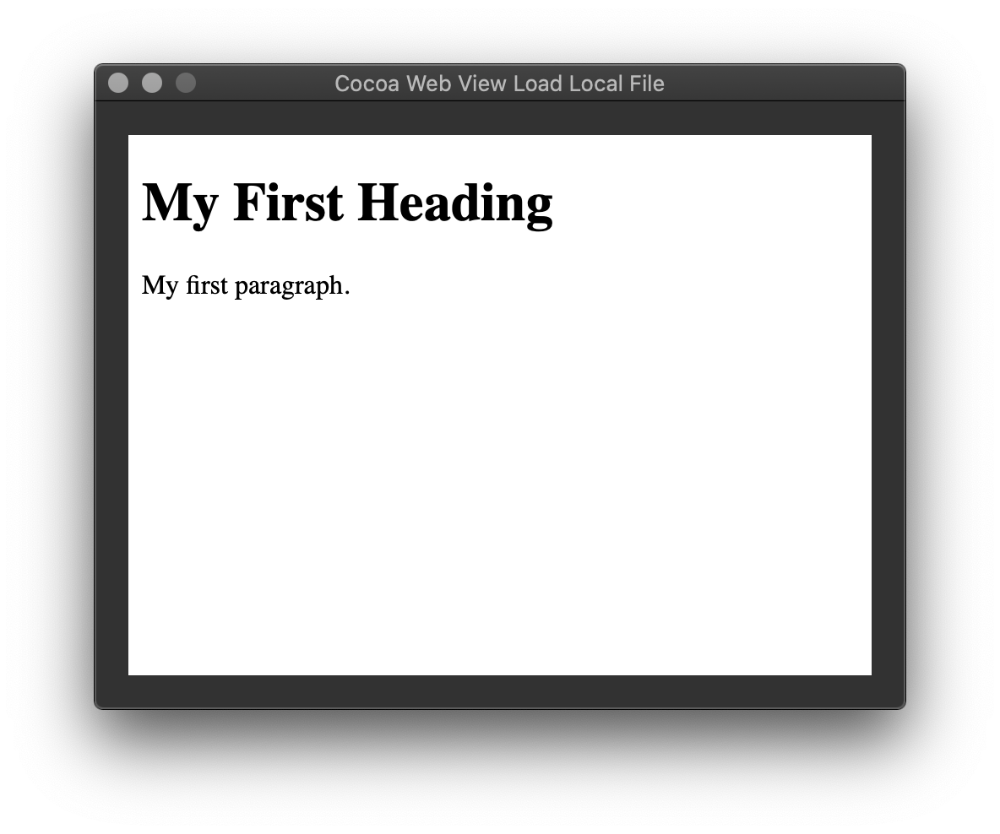

Cocoa Web View Load Local File
This post is part of Cocoa UI examples series. It covers implementation of loading local .html file in WKWebView. Example is built on macOS Catalina and Xcode 11.3. GitHub | Repository name
Enabling outgoing connections
In order to use web view it is neccessary to enable Outgoing connections (Client) in Signing & Capabilities
tab of project settings

Add local html file as project resource
In order to load local file it is neccessary to add file as a resource to project.
In Build Phases settings of project, file needs to show up under Copy Bundle Resources.

Add controls
In the Interface Builder add Web View.
It should look like this in the end.

AppDelegate
#import
#import "AppDelegate.h"
@implementation AppDelegate
- (void)awakeFromNib
{
[self LoadFile];
}
- (void)LoadFile
{
NSBundle *mainBundle = [NSBundle mainBundle];
NSString *filePath = [mainBundle pathForResource:@"example" ofType:@"html"];
NSURL *url = [NSURL fileURLWithPath:filePath];
[_webView loadFileURL:url allowingReadAccessToURL:[url URLByDeletingLastPathComponent]];
}
@end